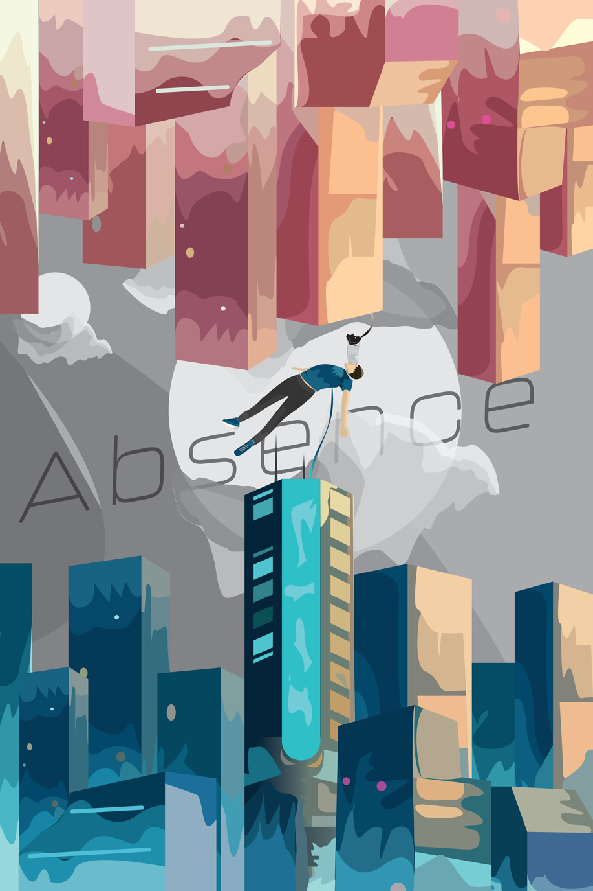

Illustration created on Adobe Illustrator, this piece features a man falling in between parallel cities. The absence refers to absence of reason and direction, the man falls but theres no frame of refrence.